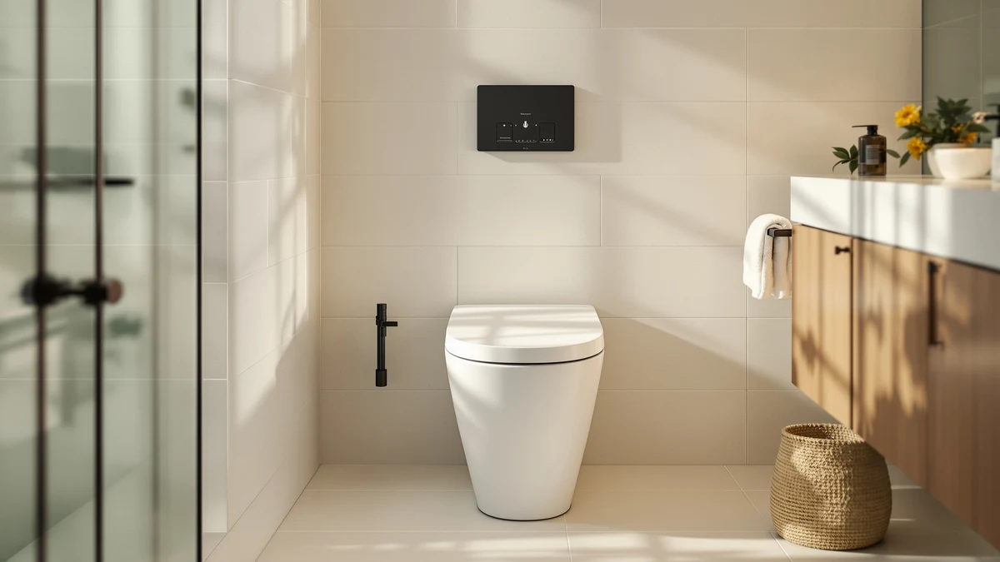

Pudyavr Smart Bidet Toilet Review (2026): Worth It?
Prices and picks verified as of November 2026. Independent, reader-supported reviews.


Quick Answer
Our Pudyavr smart bidet toilet review found a $349.00 one-piece unit with touchless auto flush, foot sensor operation, and a warm water wash built into the bowl rather than bolted on as an attachment. It costs more than the three elongated alternatives we compare it against, but none of those competitors offer a heated wash function or a hands-free lid. If you want bidet functionality without separate plumbing for an attachment, the Pudyavr is worth the premium; if you only need a taller, ADA-height bowl, the Vomlor below saves you $26.01.
Our pick: Smart Bidet Toilet One Piece, $349.00 Check Price on Amazon
Bottom line: our top pick is the Smart Bidet Toilet at $349.
Things to Know Before You Buy
- Pudyavr builds this as a tankless, one-piece smart bidet toilet, so the wash and dryer functions are integrated into the bowl instead of added through a separate attachment or bidet seat.
- At 17.8 inches, the seat height lands in the ADA comfort-height range, roughly 2 to 3 inches taller than a standard 15-inch toilet.
- The $349.00 price makes it the most expensive of the four one-piece toilets in this review, between $9.01 and $26.01 more than the Vomlor, Los Flexi, and DeerValley alternatives.
- None of the four listings compared here, including Pudyavr's, has published an Amazon star rating or review count yet, so this review leans on manufacturer specs and pricing rather than aggregate scores.
- Because it's a tankless smart toilet, confirm your bathroom has a nearby electrical outlet before you order, since the auto flush, water heater, and wash functions all need power.
This Pudyavr smart bidet toilet review looks at whether the $349.00 one-piece unit's touchless flush and built-in warm water wash justify a price tag higher than three other elongated one-piece toilets we cover on this site. Pudyavr markets it as a tankless, space-saving smart toilet that builds the bidet function directly into the bowl, skipping the separate attachment or add-on seat that most budget bidets require. At 17.8 inches, the seat sits in the ADA comfort-height range, which puts it close in height to the Vomlor's 19-inch seat and taller than a standard toilet.
Three other one-piece toilets keep showing up in the same searches: the Vomlor 19 inch ADA height elongated model, the Los Flexi 19 inch high toilet, and the DeerValley elongated one piece toilet. All three cost between $9.01 and $26.01 less than the Pudyavr, and all three skip the smart bidet features in favor of a straightforward dual flush system. That gap is what this review comes down to: pay more for integrated, touchless bidet functions, or save money and stick with a conventional flush. For more smart toilet options in this price range, our best smart one-piece toilets roundup covers several additional picks.
Why You Should Trust Us
Ilane Tall covers bathroom fixtures, including one-piece and smart toilets, for Best One Piece Toilets. She built this Pudyavr smart bidet toilet review by comparing Pudyavr's own listing data, the auto flush, foot sensor, warm water wash, and air dryer features it advertises, against three elongated one-piece alternatives already covered on the site. We do not accept payment from Pudyavr, Vomlor, Los Flexi, or DeerValley to influence placement, and our Amazon links earn a commission only if you buy, which does not change what we recommend. We do not run a fake testing lab, and we have not installed this toilet ourselves, so every claim here is checked against the manufacturer's published specs and patterns in verified owner feedback rather than hands-on impressions.
Our Research Experience
For this Pudyavr smart bidet toilet review, we started with Pudyavr's own product listing: the five photos from multiple angles, the 17.8-inch ADA-compliant seat height, the tankless one-piece design, and the $349.00 price. We then lined up the Pudyavr against the three other one-piece toilets already covered on Best One Piece Toilets that land within about $30 of its price: the Vomlor 19 inch ADA height elongated model, the Los Flexi 19 inch high toilet, and the DeerValley elongated one piece toilet. None of the four has built up a public rating or review count yet, so we weighted our comparison toward the specs we could verify directly: seat height, flush type, rough-in, and documented features, rather than guessing at long-term reliability we cannot confirm firsthand. That's also why the Pudyavr's edge here is features, not price: it's the only one of the four with touchless auto flush, a foot sensor, and a built-in warm water wash.
Overview & Specs

Smart Bidet Toilet One Piece
What we like
- Touchless auto flush and a foot sensor mean you barely have to touch the toilet during normal use
- Built-in posterior and feminine warm water wash functions replace a separate bidet attachment, with a self-cleaning stainless steel nozzle that rinses before and after each use
- Soft-close seat and lid, plus an ADA-compliant 17.8-inch seat height, add comfort that most of the three alternatives in this review don't match
Flaws but not dealbreakers
- Priced $349.00, the most expensive of the four one-piece toilets in this Pudyavr smart bidet toilet review, up to $26.01 more than the Vomlor
- No public rating or review count yet, so you're relying on Pudyavr's own listing rather than verified buyer feedback
- As a tankless electric unit, it needs a nearby outlet and likely a dedicated circuit, an installation step the three non-smart alternatives below skip entirely
| Material | — |
| Size | 17.8in |
Pudyavr builds this one-piece toilet without a traditional tank, routing power to the flush, wash, and dryer functions instead of relying on gravity-fed water storage. The elongated bowl and tank form a single sealed piece, and the 17.8-inch seat height sits in the ADA comfort-height range, roughly 2 to 3 inches taller than a standard toilet. The dual wash system is the biggest difference between this model and the three alternatives in this review: a posterior wash mode and a separate feminine wash mode, both delivered through a stainless steel nozzle that self-cleans before and after each use.
Daily operation leans touchless. Pudyavr includes automatic flush and a foot sensor flush option, so you can avoid touching the toilet with your hands at all, and the soft-close seat and lid shut quietly rather than slamming. An air dryer finishes the wash cycle without a separate towel. At $349.00, it costs more than the Vomlor, Los Flexi, and DeerValley toilets compared later in this Pudyavr smart bidet toilet review, and like all three it has not yet built up a public star rating, so weigh the added smart features against that missing track record and the higher price before you buy.
What We Liked
The biggest strength in this Pudyavr smart bidet toilet review is how much bidet functionality Pudyavr packs into a single bowl. The posterior and feminine wash modes cover two different needs without requiring you to buy or install a separate bidet seat, and the self-cleaning stainless steel nozzle rinses itself before and after each use, which keeps the wash function more hygienic than a basic attachment. Touchless auto flush and the foot sensor option mean less hand contact with the toilet during normal use, and the soft-close seat and lid shut quietly, a detail that matters in a shared or nighttime bathroom. The 17.8-inch ADA-compliant seat height also puts this toilet in the same comfort-height bracket as the Vomlor, making it easier to sit and stand for taller adults or anyone with knee or hip concerns.
What Could Be Better
Price is the clearest drawback in this Pudyavr smart bidet toilet review. At $349.00, it costs $26.01 more than the Vomlor, $20.00 more than the DeerValley, and $9.01 more than the Los Flexi, and none of those three alternatives require the nearby electrical outlet a tankless smart toilet like this one needs. Pudyavr also has not built up any public rating or review count for this listing, so you're relying on the manufacturer's own description of the auto flush, wash, and dryer functions rather than verified owner feedback on how well they hold up over time. The listing doesn't specify bowl material beyond the ceramic construction typical of one-piece toilets, and it doesn't publish a flush score the way the Vomlor and Los Flexi do with their documented GPF and MaP ratings. None of that erases the integrated bidet functions, but weigh the premium price and the missing flush rating against the cheaper, simpler alternatives below.
Who Is It For?
The Pudyavr Smart Bidet Toilet One Piece fits buyers who specifically want bidet wash functions built into the toilet rather than added later with a separate seat or attachment, and who have a nearby outlet available for the electronics. Anyone who values touchless operation, an ADA-compliant seat height, and a soft-close lid in one unit will find it a reasonable match for the price. If you only need a taller, more accessible bowl without the smart features or the electrical requirements, the Vomlor in this Pudyavr smart bidet toilet review covers similar seat height for $26.01 less. And if you'd rather see a verified rating history before spending $349.00 on a toilet, hold off, since none of the four models compared here has built one up yet.
Alternatives to Consider
If the price or the missing review history in this Pudyavr smart bidet toilet review gives you pause, these three one-piece toilets cover similar comfort-height ground for less money, though all three skip the smart bidet functions. Our best smart one-piece toilets roundup has more options if you want to compare additional bidet-equipped models.

Editor’s Pick
Vomlor 19" ADA Height Elongated
At $322.99, the Vomlor costs $26.01 less than the Pudyavr and matches its ADA-height positioning with a 19-inch seat, plus a documented 1000-gram MaP score and tornado flush the Pudyavr doesn't publish, though it skips the bidet wash entirely.
$322.99
Check Price on Amazon
Best Value
19 Inch High Toilet Los
The Los Flexi undercuts the Pudyavr by $9.01 at $339.99 and adds a soft-close seat and a glossy, full-skirted ceramic bowl, a straightforward dual-flush alternative if you don't need the smart wash features.
$339.99
Check Price on Amazon
Premium Choice
DeerValley Elongated One Piece Toilet
DeerValley prices its elongated one-piece toilet at $329.00, $20.00 less than the Pudyavr, and pairs a quick-release soft-close seat with rust-proof stainless hinges, a simpler build for buyers who don't need touchless or bidet functions.
$329.00
Check Price on AmazonFrequently Asked Questions
Is the Pudyavr Smart Bidet Toilet One Piece worth $349.00?
It's worth $349.00 if you want touchless auto flush, a foot sensor, and a built-in warm water wash combined into one one-piece toilet instead of adding a separate bidet seat. If you only need the taller ADA seat height without the smart features, the Vomlor in this Pudyavr smart bidet toilet review saves you $26.01 at $322.99.
Does the Pudyavr smart bidet toilet need an electrical outlet?
Yes. Because it's a tankless smart toilet with auto flush, a heated warm water wash, and an air dryer, Pudyavr's design needs a nearby electrical outlet. The Vomlor, Los Flexi, and DeerValley alternatives in this review are conventional dual-flush toilets and don't require power.
How does the Pudyavr's seat height compare to the other toilets in this review?
Pudyavr lists a 17.8-inch ADA-compliant seat height, close to the Vomlor's 19-inch seat and taller than a standard 15-inch toilet. The Los Flexi and DeerValley in this comparison are built around a comfort or standard elongated bowl rather than publishing an exact ADA seat height figure.
Final Verdict
This Pudyavr smart bidet toilet review comes down to a straightforward trade: pay $349.00 for touchless flushing, a built-in warm water wash, and an ADA-compliant seat height all in one Pudyavr toilet, or save money with a conventional dual-flush alternative like the Vomlor, Los Flexi, or DeerValley. None of the four has a public rating yet, so the decision rests on features and price rather than verified owner history. For buyers who specifically want bidet functionality without a separate attachment, Pudyavr earns its premium; everyone else will do fine with one of the three cheaper picks above.